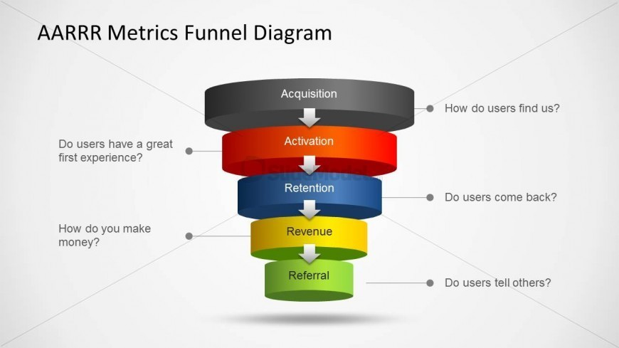

运营中一个重要的模型是AARRR模型（Dave McClure在2007提出的客户生命周期模型），涵盖用户在使用产品前后的整个生命周期中的5个环节，分别是获取用户（Acquisition）、提高用户活跃度（Activation）、提高用户留存率（Retention）、获取收入（Revenue）、自传播（Refer）。2A3R模型是一个理想态的完美闭环，用户可自发循环与传播，实现用户增长。

(A) Acquisition，获取阶段
Acquisition是将一个完全没使用过产品的用户转化为注册用户的阶段。从产品角度来讲如何让用户在海量的应用市场中注意到你的产品，从数据与影的角度来讲有多少用户从曝光转化为注册用户，都是在这一阶段需要关注的。
通常获客都是有成本的，比如购买流量，寻找最优的获客渠道等，我们除了要关注各渠道的成本，还要衡量获客这件事情的ROI。获客只是第一步，用户注册以后，是否转化？转化到哪一步流失？是否最终带来收益？收益与成本的关系，能否达到营收？获客是提升为了带来用户数量的提升，但若一味追求流量，带来一些“坏”用户或无价值的用户，则有些得不偿失了。因此，除了渠道获客数量之外，也要关注用户质量。数量和质量两个维度相结合，才能更好的筛选出适合企业自己的优质渠道，更合理地评估公司的投放效果。
(A) Activation，激活阶段
Activation通常是指新用户第一次使用产品，即用户「被激活」，成为真正的注册用户，并完成一次完整的业务流程，例如交易、打车等。
从产品角度讲，要尽可能优化新用户的产品体验，因为人们初次接触产品时也是他们最想弄明白如何使用产品的时候，需要让用户快速get到产品的核心价值，引导用户体验产品的核心功能。以便让用户更快地开始操作，体验一个完整的流程。
很多APP提供的新手红包、新人专享商品、会员限时免费体验等“真金白银”的好处，都是为了促成用户尽快体验完整的流程，增强新用户黏性。
(R) Retention，留存用户
留存通常指用户首次使用产品后，若后续有相同的需求场景，是否愿意继续使用该产品。只有用户留存下来，才有可能与产品发生更多接触，最终实现收入。
从产品角度讲，要让用户快速抓住到产品的价值点，当用户完成对产品价值的认可，也就实现了用户留存。
用户留存率可通过次日、3日、7日和次月留存等指标进行反映。次日、3日和7日用于查看活动的短期效果，较长期的指标，比如次月留存通常会逐渐稳定在一个数量级上。这些用户，基本上就是产品的目标用户了。
此外，留存还有很多指标，如：每日流失、每日回流、用户生命周期、生命周期价值、使用间隔等等。
(R) Revenue，收入
大多数企业做产品最最终的目标，都是获得商业盈利。能否盈利，往往决定了产品能否在市场上最终存活下来。因此，产品的商业模式是什么？如何盈利？是我们在营收阶段最需要考虑的问题。
在当前市场环境下，获取商业盈利可以通过两种方式，一种是产品及服务变现，另一种则是流量变现。
产品及服务变现是指：通过产品服务核心竞争力实现收入。
流量变现是指：通过用户以及用户在产品中的行为活动，做广告、数据等变现获取收入。例如：在页面进行广告展示和推广，从而吸纳用户的关注，当用户、时间和场景都足够精准时，会带来可靠的目标用户群体。数据变现是指将用户数据脱敏后，通过抽取过滤加工，形成有效、可利用的数据，通过数据的运用或商业转让，获取盈利。此外数据不单单可以通过处理加工，形成可变现的商业数据或产品，同时也能够通过挖掘分析，提炼用户画像行为，进而指导产品业务，精准获取盈利。
付费行为，既可能发生在用户激活首日，也可以在一段时间后的留存用户中。
(R) Refer，自传播
当用户实现自传播，才真正构成了一个闭环。自传播之所以重要，是因为用户的裂变是指数级增长的，通过一代一代的扩散传播，可实现用户规模的指数级增长，同时降低获客的成本。
自传播途径获得的用户，通常也具有较高的质量。这是由于用户之间或多或少存在共性的特征，因此该渠道转化率高于其他渠道就不足为奇了。此外，自传播也能够促成口碑效应的产生。
应用场景
在企业发展的不同阶段，我们需要关注的步骤是不同的。例如，在企业刚刚成立，处于占领市场的阶段，获客是最重要的指标，我们可适当地做出一些让利；若企业处于扩张期，则更应该关注用户激活；若企业处于发展的平台期，则要更多地考虑留存。